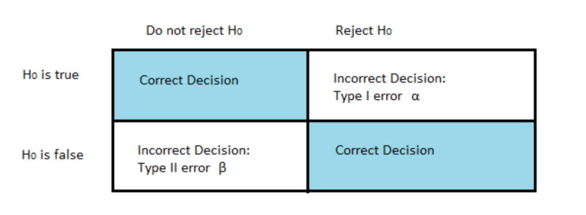

Statistics
P-Value
Statistically significant is detected when the observed p-value from the test statistic is less than the level of significance (i.e. alpha).
Meaning, there is a very low probability of observing by random chance something as extreme or more extreme than what was observed under the assumption that the null hypothesis is true.
P-Value < 0.05 = Reject null hypothesis;
P-Value > 0.05 = Fail to reject null hypothesis;
Note: If we reject the null hypothesis, this indicates strong statistical significance.
Z-Test
The one-sample z-test is used to test whether the mean of a population is greater than, less than, or not equal to a specific value.
For large (50 or more observations) normally distributed samples, normal distribution tests are equivalent to the T-Test.
Requirements for the Z-test:
The mean and standard deviation of the population distribution are known
The mean of the sample distribution is known
The variance of the sample is assumed to be the same as the population
The population is assumed to be normally distributed
T-Test
Statistical test that is used to compare the means of two groups.
When the original (population) distribution is not normal, the one sample t-test is still valid with a large enough sample size.
We perform a One-Sample t-test when we want to compare a sample mean with the population mean.
The difference from the Z Test is that we do not have the information on Population Variance here.
We use the sample standard deviation instead of population standard deviation in this case.
One-Sample T-Test:
Assumptions:
Samples are drawn from a Normally distributed population.
The observations in the sample are independent of one another.
When the original (population) distribution is not normal, the one sample t-test is still valid with a large enough sample size.
That is, the one sample t-test is robust to the normality assumption when the sample size is large enough.
Rules of Thumb in Evaluating Assumptions:
If sample sizes are the same and sufficiently large, the t-tools are valid since they are robust to the violation of normality.
If the two populations have the same standard deviation then the t-tests are valid given sufficient sample sizes.
If the standard deviations are different and the sample sizes are different, then the t-tools are not valid and another procedure should be used.
Transformations
If assumptions are not met, look at transforming the data such as taking the logarithmic transformation.
Choosing a Hypothesis Test
Statistical Power
A power test will tell us how many samples we will need to collect to have a good amount of statistical power.
It tells you how many trials you need to do to avoid incorrectly rejecting the null hypothesis
Power = Type II Error = fail to reject a false null hypothesis.
Power is the probability of not making a Type II error.
Power = the probability that we correctly reject the null hypothesis (e.g. small p-value). or “the probability of rejecting a null hypothesis when it is false”
Low Power = when there is a lot of over lap between the two distributions and we have a small sample size, we have low power.
When we have a lot of power, there is a higher probability that we will correctly reject the null hypothesis.

ANOVA
Statistical technique that is used to check if the means of two or more groups are significantly different from each other.
Assumptions:
Normality:
Similar to Hypothesis Testing, ANOVA is robust to this assumption.
Extremely long-tailed distributions (outliers) or skewed distributions coupled with different sample sizes (especially when the sample sizes are small) present the only serious distributional problems.
Equal Standard Deviations:
This assumption is crucial, paramount, VERY important.
The assumptions of independence within and across groups are critical.
If lacking, different analysis should be attempted.
F-Test
Hypothesis test to check if Evidence of Inequality of Variance
Central Limit Theorem
The distribution of sample x’s will, as the sample size increases, approach a normal distribution.
The mean (x) of the sample means is the population mean µ.
The standard deviation of the distribution of sample means is sigma/sqrt(n)
Confidence Interval
A 95% confidence interval means that if we were to take 100 different samples and compute a 95% confidence interval for each sample, then approximately 95 of the 100 confidence intervals will contain the true mean value.
CI = mean += Z * sigma / sqrt(n)
Multicollinearity
Occurs whenever an independent variable is highly correlated with one or more of the other independent variables in a multiple regression equation.
Problem: An independent variable that is very highly correlated with one or more other independent variables will have a relatively large standard error.
This implies that the partial regression coefficient is unstable and will vary greatly from one sample to the next.
Multicollinearity can also be detected with the help of tolerance and its reciprocal, called variance inflation factor (VIF). A VIF >= 10 is problematic.